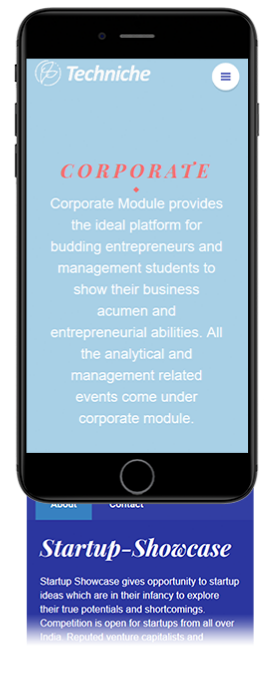

Increasing Online Registrations by Allowing Quick Registration in the Right Event
Techniche is one of the largest college tech fests in the country, with more than 50,000 participants each year. But every year, a new website was built, which resulted in inconsistent, slow, and confusing registration experience.
I took upon an ambitious challenge to design the browsing and registration experience for users and to change the team's approach towards integrating solutions for effective internal manegement.
Website - An Irony
Over the years, Techniche has served as a distinguished platform for entrepreneurs, innovators, and technocrats to showcase their ability while allowing students to learn by engaging in these events. The Techniche website has become the essential bridge in connecting participants and techniche core team.
But it failed to evolve. Nonresponsiveness, slow loading time, complex architecture, and new partner's integration resulted in decreased digital registrations, an increase in the number of queries, and extensive manual work to manage registration data.
The techfest site became an irony to the brand.
Interactive Javascript libraries slowed down website. The nav bar links were arranged randomly.
Techniche dates were shown, when a user hovered over the floating shape which resembled something unpleasant
The dots when clicked would show the next event, which users rarely figured out. The navigation system failed up front.
Challenge
Deliver Consistent Experience Within Four Months
Our goal was to deliver a consistent and straightforward experience. Each event in Techniche is unique in it's functioning. Inherently, this leads to different launch timelines and exclusive functionalities. Inevitably, everything had to be done in sprints while maintaining consistency.
Our High-level Goals were :
1. Developing a simple, elegant, and usable site.
2. Responsive Design
3. Optimized for Quick Loading
4. Easy to find on the web
Obstacles
Every journey has barriers, and our's were -
1. Starting From Scratch
Modification of the previous code was impossible for us. The voluntary student team's development skills were under development. We had to start fresh, for design as well as development.
2. Short Time to Develop and Launch
Four months is a short time to design and deliver a website. We began in November when the team started to learn how to build a website and had to launch the site by 1st week of March.
3. Balancing Academics
The academic deliverables were the priority. We had to find a balance between academics and Techniche.
My Role
I was the Head of the Web Operations in Techniche. I was responsible for developing the project timeline, ensuring on-time deliverables, gathering requirements from sponsors, partners, and other Techniche verticals, registration management, and payment query resolutions from November 2017 to September 2018. I led a team of 3 enthusiastic juniors with different engineering streams and collaborated with two designers for concept review and site improvement.
Research
Forcing Each User to Browse Everything Slowed the Process
Based on our 2017 edition experience, we found that participants were facing difficulty finding already-present information. Participants emailed us to get that information. We set out to discover why.
Based on analytics, we knew 50% of participants used mobile and other 50%, laptop/tablet to visit our platform. We went around college people to see how they use the website on these devices.
Findings
1. Slow connectivity and massive site:
Indian cellular connections are slow, and hence site almost was unable to load on the mobile browser.
Even on the college network (with fast internet), it took more than 10 seconds to load on the laptop
2. Classic Case of Inconsistencies
a. Navigation
How often do you see two type of navigation? Rarely right? And we had 3 different navigation structures making it difficult to find the right information quickly.
Navbar on Home
Navbar on Contact Us Page
Navbar Inside Events
b. Design Language
Event page featured minimalist design
Accommodation page featured image background and overlayed information
3. Extra Unnecessary Information and Usabilty Issues on Smartphones
Since most of our users came through social media posts, they came with interest in specific events. Displaying all information upfront forced them to browse through extra unnecessary information, thus slowing down them. This became painful on smartphones where a users had to scroll multiple times to find his interested topic.
Participants with fat fingers found it difficult to navigate due to close proximity of navigation links.

Don't feel bad, participants had to scroll way more than you to find information about a particular event.
GIF showing the scroll length of single page with 6 events.
4. One Label for Everything
Events, competitions, and famous Technothlon exam, everything was put under events label. Inevitably users were unable to understand the differences.
Reframing the Problem
Our research gave insight that users had different intentions:
1. Compete on a national level
2. Showcase their impressive work and get exposure
3. Learn from the experts
4. Participate in fun and have social interaction
"How might we allow participants to participate in the right event quickly?"
For the above problem the critical metrics used were
1. Digital Registrations Count & Revenue
2. Digital Footfall
3. Number of queries raised through email for existing information
There were many solutions to the problem, yet we picked a solution with the least development effort and higher impact.
Solution
Introducing Explore With Techniche'18
A. Browsing Activities
1. The new Techniche site's Home page allows users to explore activities based on their intent. For example: a user wishes to compete can directly look at all competitions with 1 click. A single glance tells everything planned for Techniche in 2018.
Techniche'18 Homepage allows users to browse through different types of activities based on their interest.
2. With the mobile-first approach, irrespective of device, it got easier to navigate. Every component excluded hover interaction, making it more usable on mobile. The side navigation allows easy navigation from one activity to any other, with three clicks at max.
Techniche home on mobile
Consistent nested navigation menu across devices
Responsive Version of Exploration Grid
3. Consistent design language made it easier to predict where to find the information on similar pages. Also, our efforts drastically reduced, and everything appeared as a part of a big home.
B. Registration Experience
1. Wherever possible, in consultation with event teams, the fields in forms were reduced to make registration quick. When form fields were needed, the form was segregated into sections to avoid overwhelming participants and losing registrations.
Form from Techniche 17
Step 1/3
Step 2/3
Step 3/3
2. We use 3rd party vendors for buying event tickets and payment handling. Their system required users to fill the form and then make payment. With form on our site, the user had to enter the same details twice. The marketing head and I discussed with our partner and developed a Techniche exclusive API allowing payment by filling one form on our site, saving effort and time.
Speeding Up With Internal Tools : Guwahati Half Marathon Case
1. For Guwahati Half Marathon, the BIB distribution, digital record of the BIB number against participant's name, and new registrations took more than 2 hours. It often resulted in a delayed start of the marathon.
2. I designed a mechanism that completed everything within 1.25 hours. Here's how we handled this challenge.
NOTE: Events start at 6:00 am and all the team was awake the whole night for settign up the arena
Registration Flow while collecting BIB number tags.
Registration arena schematics showing diversion of participants and the number of registration desks for 6km and 21km categories.
1. We divided the arena and number of desks based on each category's online registration traffic and expected offline registration traffic. This allowed optimized distribution of all participants.
2. Participants come randomly, so instead of assiging BIB number during online registration, we allocated the BIB numbers on the go. This removed delay that could be caused because of searching the BIB in the pile. The 3rd party vendors had pre assigned BIB numbers for some technical limitation and that resulted in some delays.
3. By allowing each lane to register or just update BIB number, we avoided rearranging participant who would have accidently been standing in the wrong queue. Better experience for them and a lot of time and energy saved for us.
Listen to how this tool helped in the Missing Child Incident
Impact
40,000
Users Accessed The Website
30%
Increase in Digital Registrations on an Average
>50%
Reduction in Query Emails for Existing Information